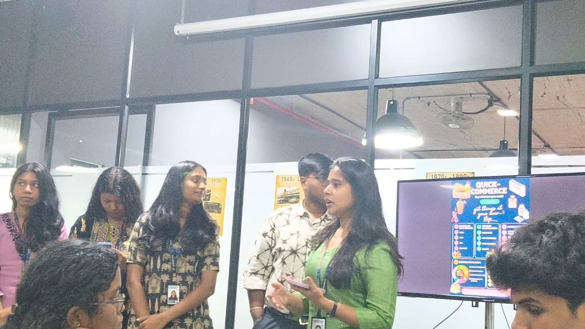
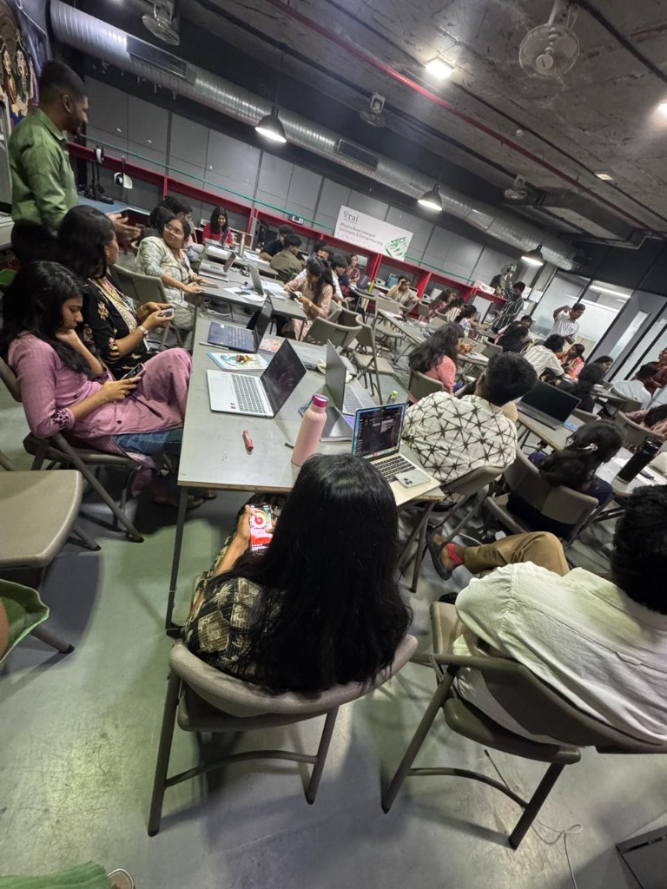

Week 01
Design Thinking & Vision
Design Thinking
Through Design Thinking I learned a crucial lesson:
"Understand the problem before building the solution."
This framework shifted my perspective from jumping straight into building to deeply empathising with users, defining the real problem, and only then ideating solutions. It's not just a process — it's a mindset.
Vision & Goals
Where I Am
The Vision & Goals session provided a valuable opportunity to reflect on my current position — understanding my strengths, skills, and the experiences that have shaped me so far.
Where I Want to Go
This session helped me chart a clear direction in my career — aligning my ambitions with actionable steps and identifying the skills I need to develop to get there.
This session was a turning point in how I think about my future — it wasn't just about setting goals, but about understanding the "why" behind them and building a meaningful career path intentionally.
2. Exploring the Gaming Industry
As part of the Beta Team, we explored the Gaming Industry through its evolution, ecosystem, Value Chain, and SWOT Analysis.
This deep dive helped me look at an industry far beyond its products and truly understand the business perspective and strategy behind it.

